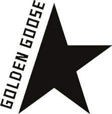

ADIDAS

Golden Goose inicia su historia en el año 2000 en Venecia, donde el matrimonio formado por Alessandro Gallo y Francesca Rinaldo fundaron la marca a partir de la sencilla idea de vender sneakers con aspecto artesanal y un desgaste intencional, dándoles un aspecto sucio y usado.
Golden Goose: zapatillas deportivas y ropa de hombre y de mujer.
MAS VENDIDOS
- GOLDENSTAR
- SUPER STAR
- BALL STAR
- MARATHON
ADIDAS